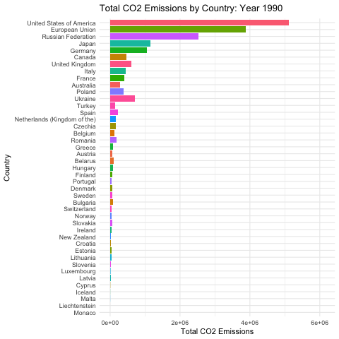

An analysis of CO2 emissions data from various countries. This project focuses on analyzing CO2 emissions data sourced from the United Nations. Using R, I prepared the data through cleaning and transformation, conducted statistical analyses to uncover key trends, and produced animated visualizations to illustrate changes in emissions over time. This analysis highlights the dynamics of global CO2 emissions and enhances my skills in data preparation, statistical modeling, and visualization.
This project analyzes CO2 emissions data collected from various countries over time. The analysis involved several key functions in R, including:
Through this analysis, I learned how to effectively manipulate and visualize data in R, gaining insights into global CO2 emissions trends.
The following animation illustrates the total CO2 emissions by country over the years:
